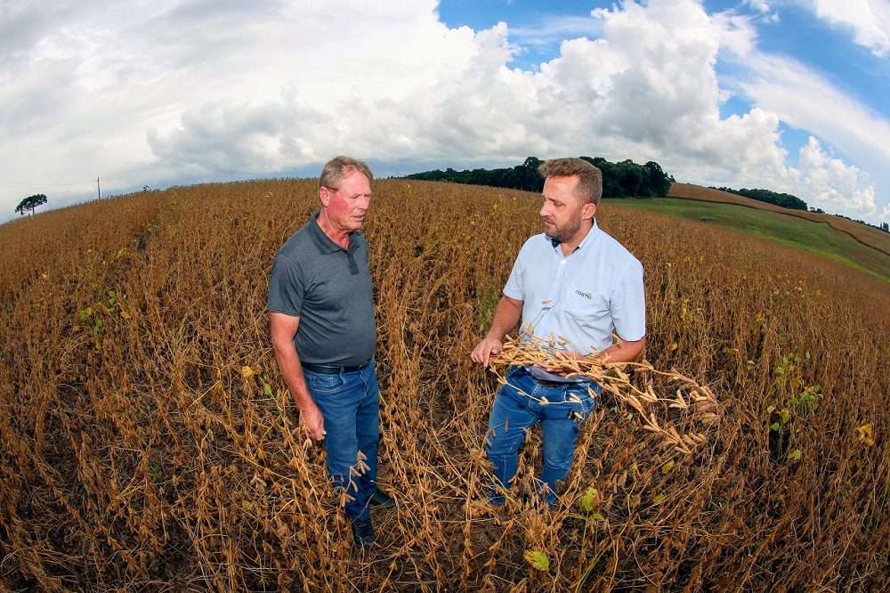

Campo & Cooperado
Onde a relação com o produtor acontece.
Assistência técnica, atendimento, orientação e atividades ligadas à produção aproximam conhecimento, cooperado e resultado.
+400Agrônomos e Veterinários